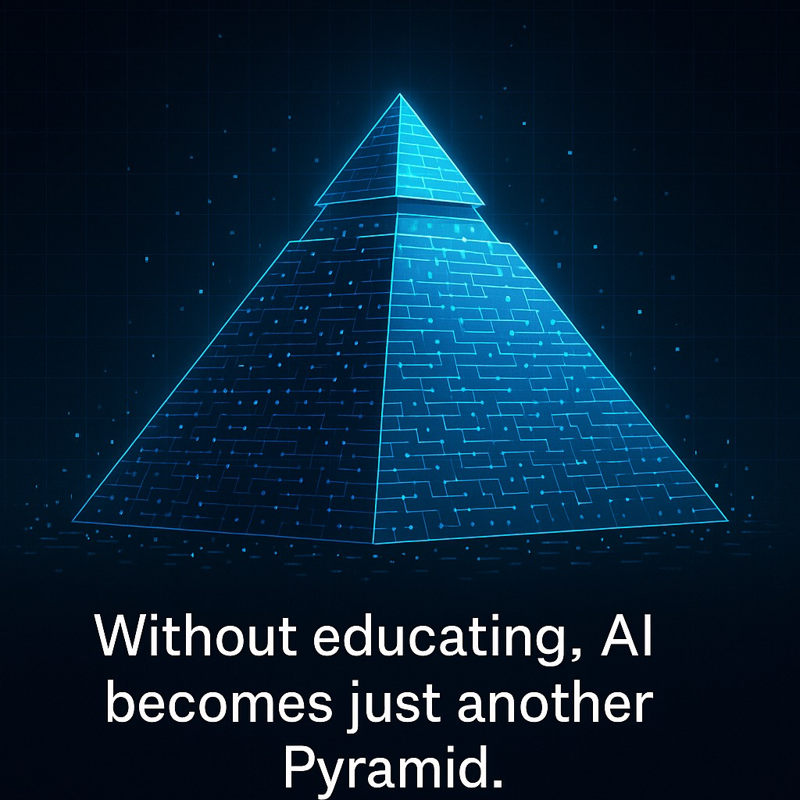

ถ้าไม่สร้างการเรียนรู้ใหม่ ทั้งคนและ AI ก็อาจเหลือเพียงความยิ่งใหญ่ที่ไม่มีใครอธิบายได้
{kind=link}

ภาพของปิรามิดอียิปต์ในโพสต์นี้ไม่ได้ถูกยกมาเพียงเพื่อสร้างความตื่นตะลึง แต่เพื่อเตือนว่าอารยธรรมมนุษย์เคยมีความรู้และทักษะระดับสูงมากพอจะสร้างสิ่งที่ยืนยงท้าทายกาลเวลาได้ ทว่าเมื่อความรู้นั้นขาดช่วง รุ่นหลังก็เริ่มไม่เข้าใจว่ามันถูกสร้างขึ้นมาได้อย่างไร และสุดท้ายบางคนก็หันไปอธิบายด้วยเรื่องเหนือจริงแทน
ผู้เขียนจึงโยงภาพนี้เข้ากับAI ในฐานะปิรามิดของยุคดิจิทัล เทคโนโลยีนี้ดูฉลาดและทรงพลังมาก แต่ทั้งหมดนั้นเกิดขึ้นได้เพราะมันยืนอยู่บนฐานความรู้ที่มนุษย์สะสม สร้าง และใส่ลงไป หากวันหนึ่งมนุษย์หยุดเรียนรู้และหยุดสร้างฐานใหม่ ความยิ่งใหญ่ของ AI ก็อาจเหลือเพียงเปลือกที่ใช้งานได้ แต่ไม่มีใครเข้าใจมันจริง
ปัญหาไม่ได้อยู่แค่ว่า AI ฉลาดหรือไม่ แต่อยู่ที่มนุษย์จะยังรักษาความเข้าใจพื้นฐานไว้ได้หรือเปล่า
ข้อสังเกตเรื่องตู้เย็นและเทอร์โมไดนามิกส์ในโพสต์นี้คมมาก เพราะมันชี้ให้เห็นว่า มนุษย์สามารถใช้เทคโนโลยีได้ทุกวันโดยไม่เข้าใจหลักการเบื้องหลังเลย และเมื่อสังคมพึ่งพาเครื่องมือมากขึ้นเรื่อย ๆ ความเสี่ยงก็ยิ่งสูงขึ้นที่เราจะมีผู้ใช้จำนวนมาก แต่มีคนที่อธิบายหรือสร้างมันได้จริงน้อยลงเรื่อย ๆ
ถ้าเกิดสิ่งเดียวกันกับ AI โลกก็อาจเต็มไปด้วยคนที่ใช้ AI เป็น แต่ไม่เข้าใจว่ามันทำงานอย่างไร ถูกสร้างอย่างไร หรือควรตั้งคำถามกับมันแบบไหน นั่นคือจุดที่เทคโนโลยีเริ่มเปลี่ยนจากเครื่องมือของความรู้ ไปเป็นวัตถุลึกลับของอารยธรรมที่ทุกคนใช้ แต่ไม่มีใครถือความเข้าใจไว้จริง
การศึกษาจึงยิ่งสำคัญกว่าเดิม เพราะโลกอนาคตต้องการคนที่สร้างฐานความรู้ ไม่ใช่แค่บริโภคคำตอบ
โพสต์นี้ไม่ได้ต่อต้าน AI ตรงกันข้าม มันยอมรับว่าเราอยู่ในโลกที่มีเทคโนโลยีเหนือกว่ายุคปิรามิดมาก แต่ยิ่งเครื่องมือมีพลังเท่าไร การศึกษายิ่งต้องทำหน้าที่รักษาcontinuity of knowledge ให้ได้มากขึ้นเท่านั้น มิฉะนั้นสังคมจะค่อย ๆ สูญเสียความสามารถในการสร้างสิ่งใหม่ด้วยตัวเอง
ประเด็นเรื่องพลังงานก็สะท้อนมุมนี้อย่างชัดเจน เพราะเมื่อ AI ต้องพึ่งโครงสร้างพื้นฐานมหาศาล หากโลกขาดพลังงาน มันก็หยุดนิ่งทันที สิ่งที่มนุษย์ยังต้องมีอยู่คือความสามารถในการหาแหล่งพลังงานใหม่และปรับตัวเพื่ออยู่รอด ซึ่งเป็นทักษะที่เกิดจากการเรียนรู้จริง ไม่ใช่แค่การเรียกใช้คำตอบจากระบบ
บทบาทของครูและมหาวิทยาลัยต้องเปลี่ยนจากผู้บรรยายเนื้อหา ไปเป็นผู้สร้างคนที่ยังคิดเองและเรียนรู้ใหม่ได้
ส่วนที่สำคัญมากของโพสต์คือข้อเสนอเรื่องอนาคตของครูและมหาวิทยาลัย ผู้เขียนชี้ว่าครูเด็กเล็กยังจำเป็นมาก ขณะที่การสอนเด็กโตหรือการสอนในมหาวิทยาลัยแบบเน้นบรรยายอาจไม่ใช่บทบาทหลักอีกต่อไป เพราะความรู้พื้นฐานจำนวนมากสามารถเรียนรู้ด้วยตัวเองหรือให้ AI ช่วยประเมินได้
แต่สิ่งที่ยังจำเป็นอย่างยิ่งคือครูและอาจารย์ที่สร้างแรงบันดาลใจ พัฒนา soft skill จุดประกายความคิด และทำให้ผู้เรียนไม่หยุดอยู่แค่การใช้เครื่องมือ ดังนั้น ประโยคปิดว่า Without educating, AI becomes just another Pyramid. จึงไม่ใช่คำขวัญเล่น ๆ แต่เป็นคำเตือนว่า ถ้าระบบการศึกษาไม่ทำหน้าที่สร้างมนุษย์ที่เข้าใจและสร้างความรู้ใหม่ได้ AI ก็อาจเหลือเพียงความยิ่งใหญ่ที่วันหนึ่งไม่มีใครอธิบายได้อีก